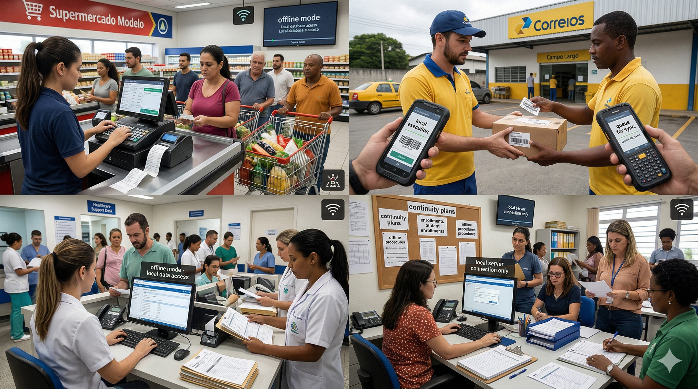

Where offline-first systems make the biggest impact
Publish date: 2026-08-04
Status: Scheduled — June 2026 onward editorial window
Estimated reading time: about 5 minutes

About this image: Campaign visual carried forward for this article slot; update asset if you refresh the creative.
Hook
Offline-first pays off fastest where work happens away from stable headquarters networks: inventory walks, pop-up sales, rural branches, and traveling technicians.
This article names the highest-impact zones so roadmap prioritization is easier.
Field technicians, pop-up stores, and traveling sales teams experience connectivity variance that headquarters Wi-Fi never reproduces.
Warehouses and distribution centers often mix Wi-Fi dead zones with high scan volume; offline-first scanning patterns reduce ripple errors.
Pop-up retail and events create extreme Wi-Fi contention; design scanning and payment flows accordingly.
Impact mapping prevents vanity pilots: choose workflows where mistakes become money, compliance, or reputation risk.
Real Problem
If you optimize only HQ, you optimize the wrong bottleneck when most revenue or risk is distributed.
Impact mapping prevents “platform for everything” waste.
Prioritize workflows where mistakes become cash or compliance incidents, not only where complaints are loudest.
Healthcare-style consent and traceability contexts amplify the cost of inconsistent records; prioritize those workflows early.
Inventory cycle counts are continuity-sensitive; inaccurate counts propagate through replenishment algorithms.
Field reality beats HQ assumptions; listen to branch and technician feedback when scoring impact.
Explanation
Evaluate impact by revenue exposure, compliance sensitivity, rework cost after outages, and frequency of weak connectivity.
Weight operational pain from frontline managers higher than convenience for central reporting.
Use a simple scoring sheet: revenue exposure, compliance sensitivity, rework cost, connectivity variance.
Mobile sales teams in emerging markets may face expensive data; local-first reduces cost and increases reliability simultaneously.
Field service fleets need offline-capable work orders with parts accountability.
Pilot metrics should include support tickets, reconciliation time, and shrink signals—not only uptime.
Solution
Rank ten candidate workflows, pilot the top two, and stop expanding until reconciliation metrics stabilize.
Share results with partners so scope stays disciplined.
Pilot in the worst branch you trust for honest feedback, not in the flagship showroom.
Impact scoring should include partner effort: if a workflow is rare but extremely painful, it may still deserve early investment.
Prioritize workflows where mistakes create regulatory exposure, not only where managers complain loudest.
Communicate pilot limits clearly to prevent operators assuming infinite offline capability.
Application
Focused offline-first investment reduces chaos cost where it hurts most, without boiling the ocean.
Cara Core uses the same prioritization language in editorial planning: fewer promises, clearer delivery.
Evidence from pilots beats slide decks in B2B procurement cycles.
Cara Core recommends publishing pilot results internally to build organizational confidence before external claims.
Use pilot metrics to decide whether to expand offline-first scope or invest elsewhere.
Cara Core recommends publishing internal pilot summaries to build organizational confidence before external claims.
Closing
Pick your top distributed workflow and score it with the four impact factors above. If it fails two or more, it belongs in the pilot lane.
We are open to joint assessments with IT firms that want evidence-backed roadmaps.
Score your top five distributed workflows this week and pick one pilot owner.
Revisit impact scores after each peak season; seasonality changes which workflows dominate risk.
Communicate pilot boundaries clearly so operators do not assume unlimited offline capability.
Re-score workflows after each peak season; risk shifts with volume and promotions.